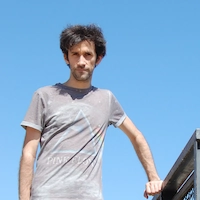

Web Design. Web Developer. Video Editing and More...
Hola, soy Dan. Un apasionado del desarrollo web y la creación audiovisual.
Profile
Daniel García Ortiz, pero Dan entre mis conocidos. Habitante de Alicante y disponible localmente para todo tipo de comunidades proximas incluyendo Madrid.
He manejado todo tipo de ramas de diseño y lenguaje audiovisual. Actualmente trabajar en la creación de paginas web y aplicaciones se ha convertido en mi principal pasión al ser nuestro recurso visual mas completo, organizado e inicial, para representar proyectos y marcas. Por supuesto, tambien incluye el analisis y manejo de redes sociales o las estrategias de marketing. Pero sigo abierto a la
produccion de video y diseño de marcas.
Habilidades
- HTML
- CSS
- JavaScript
- XML
- Wordpress
- Woocommerce
- PHP
- Premiere Pro